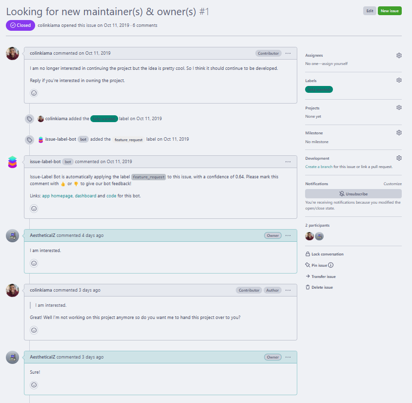

Getting UWP unit tests to work was a pain.
Posted on 2023-05-01 19:41 Never Edited
So, lets begin with a short story on how I got here in the first place.
I recently became the owner of a Mastodon client called Tooter through a GitHub conversation. The poor guy spent 3 years
without a reply!
I came around, and after a very long conversation (misinformation), I got ownership of the repository.

You can find the repository for it in my projects page! But thats not the point of this post!
The Actual Story
I lied. This post does have to do with my project.
On my big quest to clean up the 4-year-old outdated codebase (that didn't even compile), I wanted to implement GitHub Actions to automate
unit tests to make contributing easier.
What I didn't know was that I was about to spend almost an entire day doing changes to the YAML file, back-and-forth with the Actions tab and
the text editor.
Explaining The Workflow
Lets begin by the workflow triggers part. This is probably the simplest part to understand, but I will start with it anyways for the sake of completeness.
We want the workflow to run on each push and pull request, only if they target the master branch and if the modified files
are cs or csproj files.
Running actions if someone modifies a markdown file for example would be extremely wasteful of the limited time per month that we are
allowed to use Actions for.
And last, the workflow_dispatch trigger allows us to run the workflow manually from GitHub's webpage.
Here we use a job matrix to be able to run multiple configurations and target architectures with a single workflow job.
This will let us easily adapt the workflow in case we decide to test more architectures or configurations.
We also specify windows-latest as the runner, which at the time of writing, is Windows Server 2022.
Here we have some simple environment variables to make the workflow a bit cleaner and easier to modify.
The matrix variables change on every configuration and target, so we can use them to easily access the output executable.
Here we use the checkout action to download or update the repository, and then we set up MSBuild with another action.
We then run MSBuild with the -t:restore flag, which downloads or updates any NuGet packages required by the project.
Afterwards, we swap it out with the -t:build flag to actually produce an executable and APPX bundle.
Finally, we use the vswhere tool to find the Visual Studio install location to be able to use VSTest.
Then we execute the tests.
The Pitfalls
Of course, just like with everything related to UWP, there are some pitfalls.
The first one was that I tried to use dotnet test to do this.
This obviously didn't work, since it expected a .NET 7.0 solution which UWP obviously doesn't support.
I then learnt that I needed to use MSTest for .NET Framework projects, but MSTest was deprecated, so instead I had to use VSTest.
But then I realized VSTest doesn't automatically build the project, unlike .NET 7.0's test suite, so I obviously had to add some MSBuild
commands beforehand.
I then tried to add MSBuild, but I then quickly realized that you need to specify the unit test project alone since building the
entire solution is wasteful.
Oh right, I almost forgot something! NuGet restoration. MSBuild doesn't do it automatically. So don't forget that part.
About APPX bundles, you have to remove <PackageCertificateKeyFile> and
<PackageCertificateThumbprint>, as well as setting
<AppxPackageSigningEnabled> to False in the unit test project
for the build to work fine.
Lastly, about VSTest, you cannot use the default .NET Framework target. You must use frameworkUAP10, otherwise it will refuse to launch.
Then, I also found out that you must not give it the output .exe file, but instead the .appxrecipe file. This is because UWP
apps are containerized, so running the raw .exe file doesn't work.
Conclusion
This GitHub Actions adventure was not fun at all, but in the end it was very worth it. I hope this helps people in the future.
Thanks to ahmed605 and Sergio0694 for some of the help I needed.
Here's the full workflow file if you need it, you obviously will need to adapt the environment variables though: